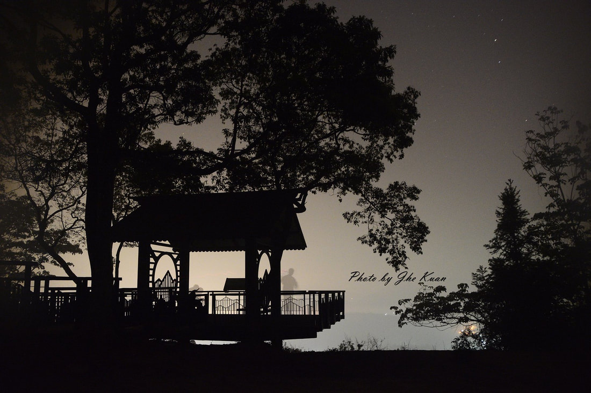
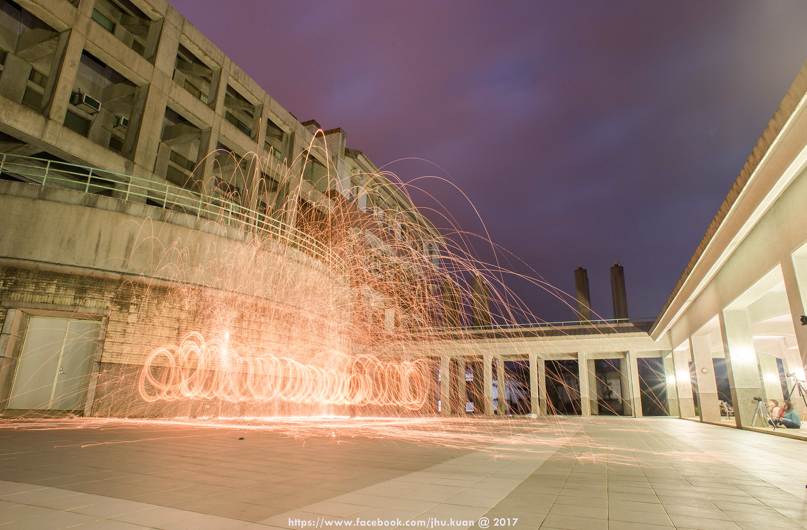

<!--alt+shift+F=自動排列-->
<div style="width: 100%; background-color: #a3a3a3; padding-bottom: 20px; color: #ffffff;" align="center">
	<table border="0" class="w600" style="margin: auto; width: 1200px; color: #575757; background-color: #ffffff;"
		cellspacing="0" cellpadding="0" align="center">


		<tbody class="acyeditor_sortable">
			
			<tr class="acyeditor_delete"> 
				<!--school.Logo-->
				<td colspan="3" class="w600" style="width: 600px; line-height: 0px; background-color: #b9cf00;"
					valign="bottom"></td>
			</tr>

			<tr class="acyeditor_delete">
				<td class="w30" style="width: 30px; color: #ffffff;">&nbsp; </td>
				<!--大圖-->
				<td class="acyeditor_picture w540"
					style="width: 540px; text-align: center; line-height: 0px; background-color: #ffffff;"></td>

				<td class="w30" style="width: 30px; height: 122px; background-color: #ffffff;">&nbsp;</td>
			</tr>

			<tr class="acyeditor_delete">
				<td class="w30" style="width: 30px; color: #ffffff; background-color: #b9cf00;">&nbsp; </td>
				
				<td class="acyeditor_text w540"
					style="width: 540px; height: 25px; text-align: right; color: #ffffff; background-color: #b9cf00;">
					<!--備註語-->
					<span class="hide">學期結束展示</span> { Student ID: 311159905 }  
				</td>
				<td class="w30" style="width: 30px; color: #ffffff; background-color: #b9cf00;">&nbsp; </td>
			</tr>

			<tr class="acyeditor_delete">
				<td colspan="3" class="w600" style="width: 600px; height: 25px; background-color: #ffffff;">&nbsp; </td>
			</tr>

			<tr>
				<td class="w30" style="width: 30px; background-color: #ffffff;">&nbsp; </td>
				<td class="acyeditor_text w540"
					style="width: 540px; text-align: justify; color: #575757; background-color: #ffffff;">

					<!DOCTYPE HTML>
					<html>
						<head>
							<!-- Google tag (gtag.js) -->
							<script async src="https://www.googletagmanager.com/gtag/js?id=G-JKCG2WTQZK"></script>
							<script>
								window.dataLayer = window.dataLayer || [];
								function gtag() { dataLayer.push(arguments); }
								gtag('js', new Date());

								gtag('config', 'G-JKCG2WTQZK');
							</script> <!-- Google tag (gtag.js)_end -->


							<script> // 用訊息窗顯示 "老師您辛苦了" 訊息
								alert("老師您辛苦了!");
							</script>

							<body oncontextmenu="return false"> <!--停止右鍵-->

							<title>NtpuDmaJhuKuan</title> <!-- 網頁標題 -->
							<meta charset="utf-8" /> <!-- 網頁編碼 -->
							<meta name="viewport" content="width=device-width, initial-scale=1, user-scalable=no" /> <!-- 隨大小縮放 -->
						</head>

						<body class="is-preload">
							<!-- NAV(導覽列) -->
							<!DOCTYPE html>
							<html>
								<head>
									<meta charset="utf-8">
									<title>My_NAV</title>
									<link rel="stylesheet"
									href="http://code.jquery.com/ui/1.11.4/themes/smoothness/jquery-ui.css">
									<script src="http://code.jquery.com/jquery-2.1.4.js"></script>
									<script src="http://code.jquery.com/ui/1.11.4/jquery-ui.js"></script>
									<style>
									h2 {background:wheat;
										margin:0;
										padding:10px
										}  
									#menu li {float:left;
												padding-left:0.5em;}
									</style>
								</head>

								<body>
								<h2>觀迎參閱其他分頁</h2>
								<ul id="menu">

								<li>成員: JheKuan
									<ul>
									<li><a href="https://www.flickr.com/photos/jhukuankuan/" target="_blank">Flicker</a></li>
									<li>--
									<li><a href="https://ntpudmakuan.weebly.com/" target="_blank">Weebly</a>
									<li><a href="https://www.instagram.com/jhukuan/" target="_blank">My_IG</a>
									<li><a href="https://gitmind.com/app/docs/m67afavm" target="_blank">Gitmind</a>
									<li><a href="../朱哲寬/home.html">哲寬_Blog</a>
									</li>
									</ul>  
								</li>

								<li>&nbsp;成員: 葉芷菱&nbsp;
									<ul>
									<li><a href="../葉芷菱/主頁.html">芷菱_Blog</a>
									</ul>
								</li>

								<li>成員: 呂莉莉 
									<ul>
									<li>施工中2
									<li>施工中3
									</ul>
								</ul>
								<script>
								$('#menu').menu({
												icons: {submenu: 'ui-icon-triangle-1-s' },
												position: { my:'left top', at: 'left+10% bottom'}
												});  
								</script>
								</body>
							</html>
						
						</body>
						<br><br><br><br><br>


						<!--Table_1-->
						<!--以文字控制表格寬度-->
						<table style="line-height:27px" ; border="5">
							<caption><h3>網站架設練習</h3></caption>
							<!--表頭-->
							<thead>
								<!--標題列-->
								<tr>
									<th colspan="2">Introduction</th>
								</tr>
							</thead>

							<tr>
								<td><a href="#" class="image avatar"></a></td>
								<td>
									<h2><strong><b>I am Jhe-Kuan,Jhu</strong></b>.<br>
										<b>學號：311159905</b>.<br>
										<b>學校：國立臺北大學 </b>.<br>
										<b>科系：<a href="https://www.dma.ntpu.edu.tw/" target="_blank" title="數位行銷（另開新視窗）">數位行銷</b>.<br></a>
										<b>課別：網站架設及網頁設計</b>.
									</h2>
								</td>
							</tr>
						</table>


						<!DOCTYPE html>
						<html>
							<body>
								<!--嵌入音樂-->
								<br><br>
								<h3>Click on the play button to play a sound:</h3>
								<p>播放影片請自行關閉循環音樂唷</p>
								<audio controls loop>
									<source src="mic\mic.mp3" type="audio/mpeg">
								</audio>
							</body>
						</html>

					</html>


					<!-- Main(主要放我的作品) -->
					<div id="main">

						<!-- 分隔線(以下為內文) -->
						<br>
						<p> *\(^_^)/* *\(^_^)/* *\(^_^)/* *\(^_^)/* *\(^_^)/* *\(^_^)/* *\(^_^)/* *\(^_^)/* *\(^_^)/* </p><br>

						<!-- One-main.description -->
						<section id="one">
							<header class="major">
								<h2>築夢計畫<br />
									Journey of Dreams</h2>
							</header>

								<p>那些年，我們拿著相機勇衝太魯閣國家公園的日子，是如此浩瀚宏偉，青山綠水皆皆印入眼簾。那些年，我們勇衝屏東出火烤爆米花的日子。那些年，我們漂泊到日本鹿兒島的日子。那些年，我們一起把玩吉他歡樂的日子。那些年，我們一起夜衝桃米深山賞螢火蟲的日子，那些年那些年實在太多了。這裡我想說的是，那些年還好有一台單眼相機，紀錄我少年生活的精采點滴。</p>
								<p>小時候我們家有許多底片相機，這是因為我父母也是厲害的業餘攝影，紀錄很多我們兒時回憶，還記得小時候跟著媽媽出去洗照片、買底片，後來底片被我拿來玩，結果底片曝光導致很多張都不能照了，也是因受家庭薰陶，奠定下一些攝影基礎。</p>
								<p>真正開啟攝影人之眼是在我去外縣市讀書那年起，我在學校打工買了第一台Nikon初階單眼相機，後來我發現原本不起眼的人事物，我漸漸的會以藝術眼光來審視，再加上學習構圖技巧、攝影原理、以及實際拍攝等等過程，讓我認識一票很不錯的同好者，我們不只拍照、還有旅遊、以及課業討論，最後變成要好朋友，很感謝攝影讓我們距離拉近了許多，以下我就用幾張作品與您分享。</p>

								<ul class="actions">
									<input type="button" value="See More" onclick="location.href='#'">
								</ul><br>
						</section>


						<!-- Two-main.picture -->
						<section id="two">
							<h2>My Photography</h2><br>
							
							<!--picture.1-->
							<a href="images/fulls/01.jpg" class="image fit thumb"></a>
							<h3 style="color:blue;">
								<li>如果可以許願，妳想寫什麼？</li>
							</h3>
							<p><span
								style="color:red;">每個人都像隻蜘蛛，連起各種人情網絡</span>，其中沾粘住的有回憶、過往、願望、祈求、禱告等等，而拍攝是在西元2018年的冬天，接近聖誕節的前夕，我拿起相機走近台階，提起筆寫下希望父母長壽健康。​
							</p><br>


							<!--picture.2-->
							<a href="images/fulls/02.jpg" class="image fit thumb"></a>
							<h3 style="color:blue;">
								<li>遠離凡塵的黑夜</li>
							</h3>
							<p>南投某處的晚上，現在11點36分47秒，隔壁朋友說ㄟㄟㄟ，想不想出去溜搭阿，我思考片刻後回答，好阿，順便買個零時，於是我們便出發追風，輾轉後我們跑去山頭，濃濃的帶水霧氣，經由城市燈光反射，有種遠離塵囂的感覺，於是當下的感覺就紀錄在此。
							</p><br>


							<!--picture.3-->
							<a href="images/fulls/03.jpg" class="image fit thumb"></a>
							<h3 style="color:blue;">
								<li>地平線上的文明</li>
							</h3>
							<p>大地之母孕育的多樣化的生物，同時也乘載陸地並支撐世間萬物，那時我坐在左右搖擺的船隻上，看著陸地的遠離，以及海水濺起的花紋，真美！地球真是太美，此刻我爬上船杆，拿起相機，<span
									style="color:red;">燃起攝影人之魂</span>，不畏疾風、不畏天搖地動，只為帶回眼簾下的美好。
							</p><br>
							
							<!--picture.4-->
							<a href="images/fulls/04.jpg" class="image fit thumb"></a>
							<h3 style="color:blue;">
								<li>光‧ 炸現</li>
							</h3>
							<p>妳說曇花一現，<span
									style="color:red;">不願天長地久，只願此刻擁有</span>，看著妳的笑容，在光絲中閃耀著燦爛，很想打住按下停止鈕，卻不行！這裡沒有所謂停止鈕，但卻有快門鍵，卡擦聲便記錄下一群興趣相投的好夥伴。
							</p><br>


							<!--picture.5-->
							<a href="images/fulls/05.jpg" class="image fit thumb"></a>
							<h3 style="color:blue;">
								<li>一景之間千變萬化，靜態縮時</li>
							</h3>
							<p>我拍過縮時及靜態縮時，都是頗好時而不費神，因為是我興趣，當時架好腳架，我從下午拍到日落，之後再將所拍加以重疊修飾後如此圖，為何會突發起想這般拍攝，是一為曾經看過達文西進化論，由猴子慢慢演化成有智慧的人類，<span
									style="color:red;">全程只用一張圖就把動態時間捕捉下來</span>，十分有趣。
							</p><br>


							<!--picture.6-->
							<a href="images/fulls/06.jpg" class="image fit thumb"></a>
							<h3 style="color:blue;">
								<li>生活 小憩一下</li>
							</h3>
							<p>忙碌地走了一整天，下午要好好休息曬個暖陽日光浴。話說，您也累了嗎? 休息是為了走更長遠的路、吃飽是為了有體力運動，不論如何，也要犒賞一下自己，這才叫生活。	
							</p>


							<!--picture.see more-->
							<ul class="actions">
								<input type="button" value="see more" onclick="location.href='https://jhukuan.tech/'">
							</ul><br>

						</section>


						<!-- Three-main.Youtube -->
						<section id="Three">
							<h2>Related Citation</h2><br>
							<div class="row">
								<!--嵌入YT影片 1 -->
								<iframe width="1200" height="606"
									src="https://www.youtube.com/embed/chNh8jVM1aI?autoplay=1&mute=1"
									title="攝影知識-簡單好學的自然光拍攝技巧" frameborder="0"
									allow="accelerometer; autoplay; clipboard-write; encrypted-media; gyroscope; picture-in-picture"
									allowfullscreen></iframe>
								<h3>YT-攝影知識-簡單好學的自然光拍攝技巧(自動撥放，聲音需自行開啟)</h3>
								<br><!--換行-->

								<!--嵌入YT影片 2 -->
								<iframe width="1200" height="606"
									src="https://www.youtube.com/embed/pvIMyN5j9I0?autoplay=1&mute=1"
									title="合歡山雲海星空雪景 縮時攝影 BEAUTIFUL TIME LAPSE TAIWAN BY louisch 陳志通" frameborder="0"
									allow="accelerometer; autoplay; clipboard-write; encrypted-media; gyroscope; picture-in-picture"
									allowfullscreen></iframe>
								<h3>YT-合歡山雲海星空雪景 縮時攝影(自動撥放，聲音需自行開啟)</h3>
								<br><!--換行-->

							</div>


							<!--YT to go -->
							<ul class="actions">
								<input type="button" value="go Youtube"
									onclick="location.href='https://www.youtube.com/results?search_query=%E6%94%9D%E5%BD%B1%E7%9F%A5%E8%AD%98'">
							</ul><br>

						</section>


						<!-- Four-main.contact me -->
						<section id="Four">
							<h2>Contact me</h2>
							<p>無論是旅遊、攝影、吉他、游泳、騎單車、爬山、電腦網路想分享或討論都可以點留下方資訊給我唷！</p>
							<div class>
								<div class>
									<form method="post" action="#">
										<div class>
											<div class><input type="text" name="name" id="name" placeholder="Name" />
											</div>
											<div class><input type="email" name="email" id="email"
													placeholder="Email" /></div>
											<div class><textarea name="message" id="message" placeholder="Message"
													rows="4"></textarea></div>
										</div>
									</form>
									<ul class="actions">
										<input type="submit" value="Send Message" />
									</ul><br>
								</div>

							</div>
						</section>

					</div><br>

					<!-- Footer.copyright -->
					<footer id="footer">
						<div class="inner">
							<ul class="copyright">
								<li><h3><span class="label">Address：</span></h3></li>
								<li><p>104380_臺北市民生東路三段67號_數位行銷 (一) 朱哲寬</p></li>
								<li><h3><span class="label">Phone：</span></h3></li>
								<li><p>電話(02)8674-1111分機18073</p></li>
								<li><h3><span class="label">Email：</span></h3></li>
								<li><a href="jhukuan@gmail.com">jhukuan@gmail.com</a></li>
								<li><h3>&copy; Copyright：</h3></li>
								<li><p> 攝影作品 — 保留所有權利。</p></li>
							</ul>
						</div>
					</footer>

					<marquee><span style="color:blue;">Design: jhukuan</span></marquee> <!--移動字型(走馬燈)-->
				</td>
			</tr>
		</tbody>
	</table>
</div>
			

